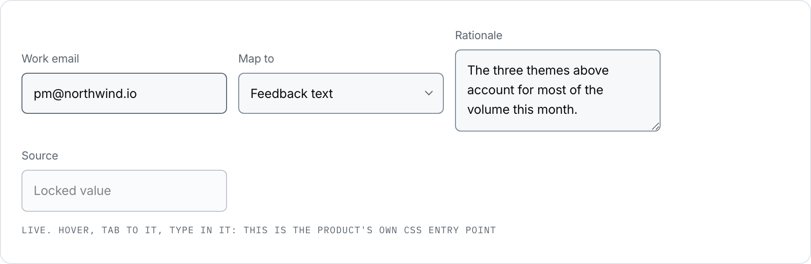
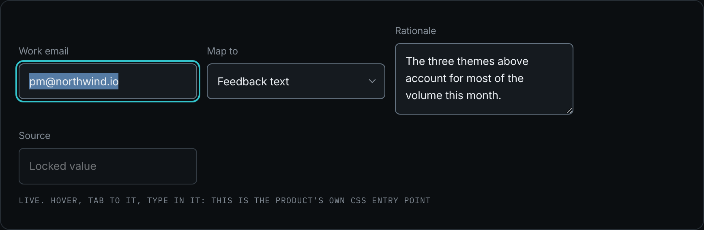
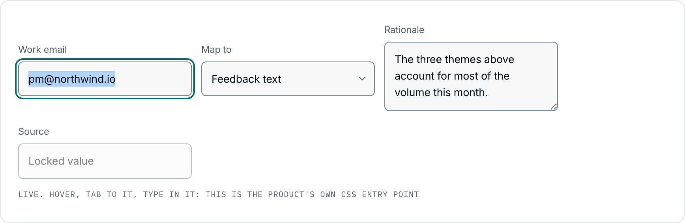
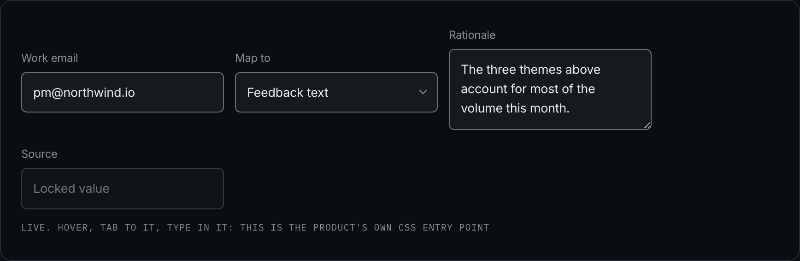
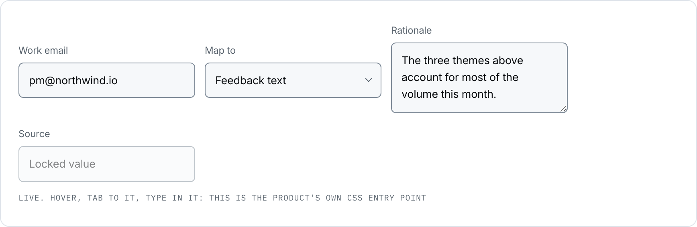

Live. Hover, tab to it, type in it: this is the product's own CSS entry point
Variants and states
One component and three elements: a text field, a textarea and a select share one zone set, so they are one
thing with three forms rather than three things. The select adds a chevron, which is an affordance and not a zone.
Columns are the three elements, rows are the states input.css paints: rest, hover,
focus-visible, disabled. Active is absent on purpose: a field has no pressed state, and a cell filled for the sake of the
template would be an invented one. Error is absent for a different reason: input.css does
not paint it, so it cannot be drawn from the product's rules (see Technical, "States").
| State | Text input.input | Textarea textarea.input | Select .select > select.input |
|---|---|---|---|
| Rest | |||
| Hover | |||
| Focus | |||
| Disabled |
Other forms
.input--mono. A value read character by character takes the mono face. A URL is read character by character; a sentence is not. 1 in the product..input--title. A brief is named where it will be read, at heading size, with a dashed rule as the only sign the heading can be edited. 2 in the product..input--dense, as the mapping grid uses it. Brings the type and the padding down and leaves the 44px target where it is. 5 in the product.Properties
| Property | Type | Values | Default |
|---|---|---|---|
| Element | element | text input.input · textarea textarea.input · select select.input inside .select | text |
| Content | variant | default · mono .input--mono · title-inline .input--title | default |
| Density | variant | base · dense .input--dense | base |
| Width | layout, not a property | 100% of the container, always | 100% |
| State | variant | rest · hover · focus-visible · disabled [disabled] | rest |
How to use it
When
This product asks a person to type in exactly one place: bringing feedback in, and naming the artifact that comes out. Nothing else in it is a form. That is why the field is not a decorated control here but a plain one: the interesting thing on a CSV mapping screen is the customer's own sample data beside the field, and a field competing with it would be the defect.
The title-inline form is the sharpest case. A brief is named where it will be read, at heading size, with a dashed rule underneath as the only sign that the heading can be edited. The alternative, a labelled field above a preview, would ask the person to imagine the result instead of showing it.
When not
- To show a value nobody edits: take a mono line of text, or
.tag. A field promises editability. The share link is a real readonly field because it is copied; a source status is not. - For help text: take the label, or a line under the field. A placeholder is not help, it is an example. It vanishes on the first keystroke.
- To shrink the field below 44px for density: take
.input--dense. It brings the type and the padding down and leaves the target where it is.
Where it stands
8 screens, 18 fields. Text 8, email 4, password 4, textarea 6, select 1, title-inline 2. The ones already in colour:
Anatomy
| Zone | Class or element | Rule |
|---|---|---|
| the field | .input | 44px floor, the surface ground, and a border from --line-control. At 1.19:1 off the page the border is the ONLY thing that says this is a field |
| the chevron | .select::after | On a WRAPPER, because a select cannot carry a pseudo-element. Drawn from the placeholder ink, so it costs no colour literal and no request |
| the placeholder | ::placeholder | Secondary ink, from base.css. It shows the shape of the answer, never repeats the label |
| the label | .field-label | A separate atom. A field without one is a field a screen reader cannot name |
Axes, with the rule that chooses
| Axis | Values | The rule that chooses |
|---|---|---|
| element | text 18 · textarea 6 · select 1 | The shape of the answer chooses. One line, several lines, or one of a closed set |
| content | default · mono 1 · title-inline 2 | A value read character by character takes the mono face. A URL is read character by character; a sentence is not |
| density | base 16 · dense 5 | Density is given by the place. A mapping grid puts five fields in a column. The 44px floor does not come down with the type |
| width | not an axis | A field is 100% of its container by definition. Where the container is narrow, the field is narrow |
States
| State | Token | What moves |
|---|---|---|
| hover | --line-hover | The border brightens. Nothing else: a field that grows on hover moves the whole form |
| focus-visible | --line-focus, from base.css | The one ring the product uses. The title-inline form offsets it by 4px, because its own border is a dashed rule and the two would touch |
| error | --text-danger on .field-err | The error is a LINE UNDER THE FIELD and not a red border: the message says what to do, and a colour alone cannot |
| disabled | --opacity-disabled | Dimmed, never repainted |
Why error has no row in the matrix: .field-err is not declared in design/system/, and input.css paints no error state, so there is nothing of the product's own to draw. [?] To be settled: either the rule moves into the system or this row leaves the table.
Tokens it reads
| Reads | Grows from | For |
|---|---|---|
--bg-surface | --grey-900, plate B pixel | the ground of the field |
--line-control | --grey-600 | its boundary. Raised at the Step 4 review to clear 3:1 |
--line-hover | --grey-400 | hover |
--text-primary, --text-secondary | --grey-050, --grey-400 | the value, and the placeholder |
The CSS also reads, beyond the four above: --size-target, --radius-md, --space-2, --space-4, --space-5, --type-sm, --type-xs, --type-xl, --weight-strong, --tracking-head, --font-mono, --opacity-disabled, --ease. The textarea line height is the literal 1.55 of kit.css, not --leading-snug (1.45).
Snapshots, taken with a real pointer
The four states, both themes, snapshots. The matrix on Overview is derived by _states.js; these are the same states reached by a real mouse and a real Tab key. Six snapshots and six named differences. Active is absent on purpose: a field has no pressed state, and a cell filled for the sake of the template would be an invented one.
Re-take: node scripts/shoot-states.js input





Copy this
<label class="field-label">Work email</label> <input class="input" type="email"> <span class="select"><select class="input"><option>Feedback text</option></select></span> <textarea class="input" rows="3"></textarea>
File: design/system/components/input.css. Stands on: 3.2 Import a CSV, 6.1 Build brief, 6.3 Share link
Changes, newest first
| Date | What changed | Record |
|---|---|---|
| 2026-11-21 | The textarea line height is 1.55 again, as in kit.css, instead of --leading-snug (1.45). Drift nobody approved, reverted | docs/decisions.md, "Step 6: the system reconciled with the product" |
| 2026-11-20 | The page moved to the card format: Overview, Technical, History. The states became a live matrix drawn from the product's own rules, with the three elements as columns; the snapshots moved to Technical as the measurement beside it | docs/decisions.md, "The showcase is read by purpose" |
| 2026-08-19 | Split out of the flat kit into components/input.css, with a page of its own at Step 5 | commit 2353608 |
| 2026-08-19 | Two contextual overrides of the input were promoted to the declared variants .input--mono and .input--dense | commit 0980e88, docs/decisions.md, "The critique ran on three instruments" |
| 2026-08-18 | The component grew out of the colour layer into the flat kit, kit.css | commit d461e12, docs/decisions.md, "The kit grew out of the colour layer" |